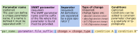
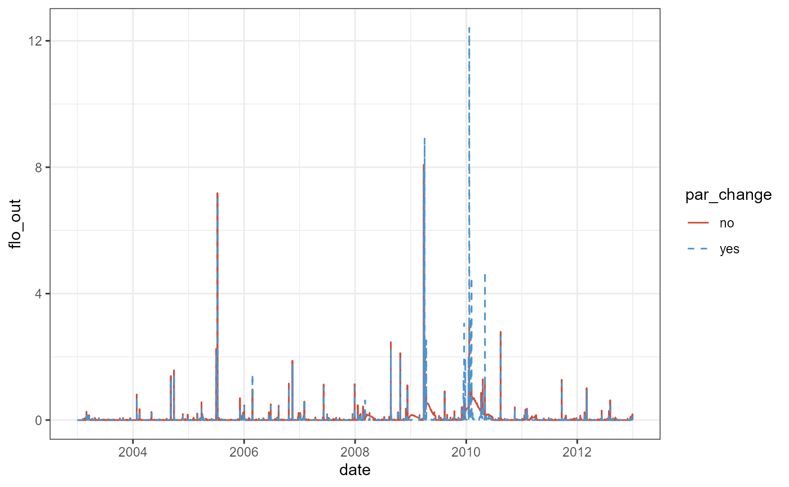
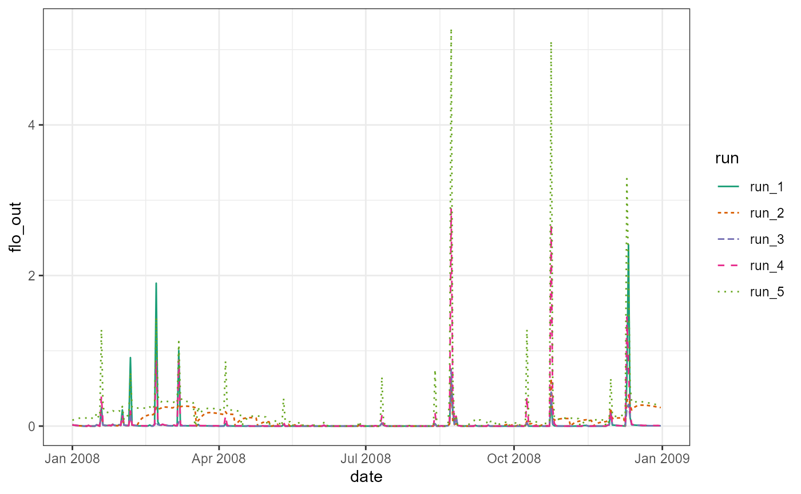

Loading SWATplusR
If you did not install SWATplusR yet you can do that now running the following lines in R.
# If the package remotes is not installed run first:
install.packages('remotes')
remotes::install_github('chrisschuerz/SWATplusR')Before we start exploring the package load SWATplusR.
SWAT demo projects
SWATdata provides a set of fast running, lightweight SWAT2012 and SWAT+ model setups of a head watershed of the Little River Experimental Watershed [LREW; Bosch et al. (2007)]. Additionally, discharge observations at the outlet of the demo catchment (gauge J of LREW) and spatial information of the SWAT model setups are available from SWATdata. The SWATdata GitHub page gives an overview of the available data sets.
Loading a SWAT project
Demo data can be loaded with the function load_demo(). With the input argument dataset you can define which SWAT project data you want to load. To load a SWAT project folder define dataset = 'project'. The path defines the path on your local hard drive where you want to store the SWAT project folder. Caution: *Please try to avoid blanks in your path names (e.g. ‘C:/this is a/path with blanks’). This can cause issues when running the model. Try to use e.g. ’_’ in your path names instead.* As the SWAT project is available as SWAT+ and as SWAT2012 project you have to specify the version of the SWAT project you want to load. Use version = 'plus' to load a SWAT+ project and version = '2012' to load a SWAT2012 version of the project. SWAT+ is under constant development and new model revisions are released from time to time. I try to keep SWATdata and the SWAT+ demo projects up to date and provide at least a few of the last SWAT+ revisions as demo projects. If no revision number is specified the most recent SWAT+ model is loaded. You can, however, also load a SWAT+ project with that was built for a specific SWAT+ revision by providing for example the input argument revision = 59.3 to load a SWAT+ revision 59.3 model setup. Please check the SWATdata GitHub page to see which model setups are available. The two examples below load the most recent SWAT+ model setup and the available SWAT2012 setup.
# The path where the SWAT demo project will be written
demo_path <- 'Define:/your/path'
# Loading a SWAT+ demo project
path_plus <- load_demo(dataset = 'project',
path = demo_path,
version = 'plus')
# Loading a SWAT2012 demo project
path_2012 <- load_demo(dataset = 'project',
path = demo_path,
version = '2012')In the case of a SWAT project load_demo() saves the defined SWAT project in the file path that was defined with path = demo_path and returns the final demo project path as a character string in R. I assigned these paths to the variables path_plus and path_2012 to use them later in the model runs.
Observation data
SWATdata also provides daily discharge records for the outlet of the demo catchment (Gauge J of LREW) for the time period 1968-01-01 until 2012-12-31. Observation data are useful for the model evaluation. These date will be used in several examples with the SWAT demo projects. You can load the observation data again using the function load_demo(). To access the observation data set you have to define dataset = 'observation'. The other input arguments are not required in this case as the observation data are the same for all demos. When loading the observation data set load_demo() returns a data frame with a date column and a column for the mean daily discharge at that date. In the code below the observation data frame is assigned to the variable q_obs.
q_obs <- load_demo(dataset = 'observation')
q_obs#> # A tibble: 16,437 x 2
#> date discharge
#> <date> <dbl>
#> 1 1968-01-01 0.16
#> 2 1968-01-02 0.57
#> 3 1968-01-03 0.61
#> 4 1968-01-04 0.37
#> 5 1968-01-05 0.25
#> 6 1968-01-06 0.2
#> 7 1968-01-07 0.21
#> 8 1968-01-08 0.22
#> 9 1968-01-09 0.18
#> 10 1968-01-10 0.34
#> # ... with 16,427 more rowsA quick plot of the observation data q_obs shows the daily mean discharge at Gauge J for the years 1968 to 2012 in \(m^3 s^{-1}\).
plot(q_obs, type = 'l')
First SWAT model runs
With the functions run_swatplus() and run_swat2012() you can perform simulations in a SWAT+ or a SWAT2012 project folder that is located on the local hard drive. SWAT model simulations write a large range of output variables after a simulation run. Usually only a few variables are analyzed (e.g. in-stream discharge or nutrient loads). With the function define_output() you can specify the output variables that are returned to R after the simulation run. Thus, the minimum information you have to provide to perform a model simulation is where your project is located with the input argument project_path and which simulation outputs should be returned after the simulation defined with the input argument output. The output variables are always specified with the function define_output() and passed through with the input argument output. The example below shows a minimum example for a SWAT+ project.
project_path
As the project path we define the path to the previously loaded demo project project_path = path_plus. If you do not want to work with the demo project, but you already want to use your own SWAT project you can define the path to your SWAT ‘TxtInOut’ folder and simply run simulations there. Be aware in this case that the runtime can be much longer for large projects, which might hinder you in testing many things when first playing around with SWATplusR. The demo projects are designed in a way that simulations should not take longer than a few seconds, depending on the machine where it is executed. If you want to use your own SWAT project please consider a few things:
- The SWAT project folder must contain exactly one executable file.
run_swat*()automatically searches for the one SWAT executable in the project folder. If there are no or more than one executables available in the project folder an error is returned asrun_swat*()does not know which executable file to use. - Weather data must be provided with the project as
run_swat*()does some checks for which time periods weather data are available. - Make clear to use the right function, ether
run_swatplus()to run a SWAT+ project, orrun_swat2012()to run a SWAT2012 project. - again Caution: *Please try to avoid blanks in your path names (e.g. ‘C:/this is a/path with blanks’). This can cause issues when running the model. Try to use e.g. ’_’ in your path names instead.*
output and define_output()
The simple example below defines only one output that is returned to R. The definition follows a simple syntax. define_output() requires three input arguments. The file indicates in which file the SWAT output variable of interest is written. As we want to return the discharge in this example we define file = 'channel_sd'. All output files for SWAT+ are listed in the ‘print.prt’ of your SWAT+ project. The variable for the discharge that leaves a channel is called 'flo_out'. We define variable = 'flo_out'. The third input argument is unit. unit defines for which units, in this case for which channels, we want to extract the output variable. The SWAT+ demo project has only one channel and therefore we define unit = 1. The correct channel ID is listed in the ‘chandeg.con’ file in the SWAT+ project folder. If you have, many channels and you want to compare your simulation outputs with observation data, make sure to select the correct id that corresponds to your gauge location.
q_sim_plus <- run_swatplus(project_path = path_plus,
output = define_output(file = 'channel_sd',
variable = 'flo_out',
unit = 1))
#> Building 1 thread in 'Define:/your/path/swatplus_demo/.model_run':
#> Thread 1 of 1 Time elapsed: 0S Time remaining: 0S
#> Completed 1 thread in 0S
#> Performing 1 simulation on 1 core:
#> Simulation 1 of 1 Time elapsed: 3S Time remaining: 0S
#> Completed 1 simulation in 3SThe syntax of define_output() that was shown above for SWAT+ is the same for SWAT2012 projects. The only difference between the two models in the output definition is how to correctly address the output variables. The output files are organized differently in SWAT+ and SWAT2012. SWAT2012 simulations generate output files that are called ‘output.’ followed by a suffix that defines the type of output. Subbasin outputs are stored in the ‘.sub’ file, HRU outputs in the ‘.hru’ file, and channel outputs for example in the ’.rch’ file. This list is not comprehensive and there are further output files. If you want to return variables from other SWAT2012 output files please please go through the ‘output.’ files in your project folder after performing a simulation run. In the minimum example we define file = 'rch' to access the channel output file. The variable ‘FLOW_OUT’ defines the discharge that leaves a channel. Therefore, we define variable = 'FLOW_OUT'. Caution: Be aware that the variable definition is case sensitive and variables in SWAT2012 are usually upper case. The SWAT2012 demo project has in total 3 channels. In the output definition we can also define multiple units for which we want to extract outputs. In the example below we define unit = 1:3 which means that we return the ‘FLOW_OUT’ for the channel units 1,2, and 3.
q_sim_2012 <- run_swat2012(project_path = path_2012,
output = define_output(file = 'rch',
variable = 'FLOW_OUT',
unit = 1:3))
#> Building 1 thread in 'Define:/your/path/swat2012_demo/.model_run':
#> Thread 1 of 1 Time elapsed: 3S Time remaining: 0S
#> Completed 1 thread in 3S
#> Performing 1 simulation on 1 core:
#> Simulation 1 of 1 Time elapsed: 4S Time remaining: 0S
#> Completed 1 simulation in 4SAll caps variable names can be annoying when you frequently call them in your analyses in R. You can also assign a different name to the ouput variables. The only difference is that you have to provide the defined outputs in a list(). The output definition in a list() is required in any case when you want to define several output variables, which is further explained in the article on output definition. The small example below performs exactly the same SWAT2012 simulations as above but assigns the names q_1, q_2, and q_3 to the output variables.
q_sim_2012_2 <- run_swat2012(project_path = path_2012,
output = list(q = define_output(file = 'rch',
variable = 'FLOW_OUT',
unit = 1:3)))
#> Building 1 thread in 'Define:/your/path/swat2012_demo/.model_run':
#> Thread 1 of 1 Time elapsed: 3S Time remaining: 0S
#> Completed 1 thread in 3S
#> Performing 1 simulation on 1 core:
#> Simulation 1 of 1 Time elapsed: 4S Time remaining: 0S
#> Completed 1 simulation in 4SThe two examples for our first SWAT simulations use very basic output definitions. The output definition in run_swat*() can be more complex and more comprehensive. A more detailed insight with further examples is provided in an article that focuses on simulation output definition. I recommend to go the examples in this article as well, as your model simulations should very likely return more than just the discharge at your catchment outlet (The article is currently in preparation and will be online soon. Please be patient in the meantime).
Exploring the simulation outputs
SWATplusR aims to return SWAT simulations in a tidy format. The date structure of the simulation results is different for single simulation and many simulations with different parameter sets. Yet, the general structure is the same for all simulation outputs returned in R. Simulation results are always arranged in tibbles (Müller and Wickham, 2019). In the run_swat*() default setting (add_date = TRUE) the first column of the simulation results is always the date column followed by the columns for the output variables. If a single simulation run was performed without parameter changes (parameter = NULL so the default setting) a single tibble with the simulation outputs for that run is returned. When performing simulations with one or many different parameter sets a list of tibbles is returned that I explain below.
If we have a look at the outputs of all three simulations we see that they all have the same general structure. The first column is a date column which is followed by the defined output variables. In the case of the SWAT+ simulation outputs q_sim_plus the single output variable that we defined is called flo_out, so the name of the variable as it is defined in the .txt output file.
q_sim_plus
#> # A tibble: 3,653 x 2
#> date flo_out
#> <date> <dbl>
#> 1 2003-01-01 0.00412
#> 2 2003-01-02 0
#> 3 2003-01-03 0
#> 4 2003-01-04 0
#> 5 2003-01-05 0
#> 6 2003-01-06 0
#> 7 2003-01-07 0
#> 8 2003-01-08 0
#> 9 2003-01-09 0
#> 10 2003-01-10 0
#> # ... with 3,643 more rowsFor the SWAT2012 model setup we defined to return the discharges of all three channels in the model setup. In the simulation outputs we can see now that a suffix number was added to the variable names. These numbers correspond to the unit IDs in the output table. Thus, you can directly relate the outputs in R to the respective units in a model setup.
q_sim_2012
#> # A tibble: 3,653 x 4
#> date FLOW_OUT_1 FLOW_OUT_2 FLOW_OUT_3
#> <date> <dbl> <dbl> <dbl>
#> 1 2003-01-01 0.174 0.103 0.413
#> 2 2003-01-02 0.154 0.0956 0.377
#> 3 2003-01-03 0.150 0.0935 0.369
#> 4 2003-01-04 0.148 0.0921 0.363
#> 5 2003-01-05 0.146 0.0912 0.359
#> 6 2003-01-06 0.145 0.0906 0.357
#> 7 2003-01-07 0.144 0.0901 0.355
#> 8 2003-01-08 0.144 0.0897 0.354
#> 9 2003-01-09 0.143 0.0894 0.353
#> 10 2003-01-10 0.143 0.0890 0.352
#> # ... with 3,643 more rowsAs mentioned above, the only difference between q_sim_2012 and q_sim_2012_2 is the naming of the output variables. We defined that the should now be called q instead of FLOW_OUT. Although the name has changed the suffix values are the same in this case and is added automatically by define_output().
q_sim_2012_2
#> # A tibble: 3,653 x 4
#> date q_1 q_2 q_3
#> <date> <dbl> <dbl> <dbl>
#> 1 2003-01-01 0.174 0.103 0.413
#> 2 2003-01-02 0.154 0.0956 0.377
#> 3 2003-01-03 0.150 0.0935 0.369
#> 4 2003-01-04 0.148 0.0921 0.363
#> 5 2003-01-05 0.146 0.0912 0.359
#> 6 2003-01-06 0.145 0.0906 0.357
#> 7 2003-01-07 0.144 0.0901 0.355
#> 8 2003-01-08 0.144 0.0897 0.354
#> 9 2003-01-09 0.143 0.0894 0.353
#> 10 2003-01-10 0.143 0.0890 0.352
#> # ... with 3,643 more rowsYou can see from all three simulation outputs that daily simulation outputs were returned and the output printing in all cases started with the date 2003-01-01. The simple reason for that is that the default settings in the ‘file.cio’ of the SWAT2012 model setup and the ‘print.prt’ and ‘time.sim’ files of the SWAT+ model setup are defined to perform simulations between 2000-01-01 and 2012-12-31 and to skip 3 years and return daily outputs. In practice we often want to change all of these model parameters. run_swatplus() and run_swat2012() do have many input arguments to specify these and other model configurations. I will explain further input arguments in the section Further input arguments.
Plotting the simulation outputs
The clear data strucure of SWAT simulations that are returned with run_swat*() facilitate their integration into any analyses, without any major data preparation necessary. The small example below shows how we can use the simulation outputs to plot the SWAT+ simulations and the SWAT2012 simulations together with the observed discharge.
# Loading R package for data analysis (dplyr and tidyr) and plotting (ggplot2)
library(dplyr)
library(lubridate)
library(ggplot2)
library(tidyr)
#> Warning: package 'tidyr' was built under R version 4.1.2
# Prepare the SWAT+ simulation output
q_plus <- q_sim_plus %>%
rename(q_plus = flo_out) # Rename the output to q_plus
# Prepare the SWAT2012 simulation output
q_2012 <- q_sim_2012 %>%
select(date, FLOW_OUT_3) %>% # Only select the columns date and FLOW_OUT_3
rename(q_2012 = FLOW_OUT_3) # Rename the output to q_plus
# Prepare the table for plotting
q_plot <- q_obs %>%
rename(q_obs = discharge) %>% # Rename the discharge columnt to q_obs
filter(year(date) %in% 2003:2012) %>% # Filter for years between 2003 and 2012
left_join(., q_plus, by = 'date') %>% # Join with the q_plus table by date
left_join(., q_2012, by = 'date') %>% # Join with the q_plus table by date
pivot_longer(., cols = -date, names_to = 'variable', values_to = 'discharge') # Make a long table for plotting
ggplot(data = q_plot) +
geom_line(aes(x = date, y = discharge, col = variable, lty = variable)) +
scale_color_manual(values = c('tomato3', 'black', 'steelblue3')) +
scale_linetype_manual(values = c('dotted', 'solid', 'dashed')) +
theme_bw()
Changing parameter values
Changing parameter values is an essential option for SWAT model simulations. In a SWAT model calibration we (or at least I do) define large sets of combinations for model parameter changes and apply each of them in model simulations. Parameter optimization usually starts with an initial parameter combination and iteratively tests new parameter combinations to progessively improve the model performance. SWATplusR’s run_swat*() functions can easily be included in such modelling workflows in R. Parameter value changes in a SWAT run are controlled through the input argument parameter.
parameter inputs
The input argument parameter is available in run_swatplus and run_swat2012. The definition of parameter changes works in a very similar way for SWAT+ and SWAT2012 models. The definition of a parameter value change essentially consists of a parameter name text string and a value that defines the magnitude of the change. The name definition for a parameter value change follows a very specific syntax. The individual parts of that text string control different aspects of a parameter change. The overview figure below shows the individual parts of a parameter name.

The minimum required inputs to define a parameter change are the SWAT model parameter, the type of change that should be applied to the parameter and the value of the change. The example below would cause a change of all Curve Number 2 ‘cn2’ values in a SWAT+ model setup by a value of 5.
par_chg <- c("cn2.hru|change = abschg" = 5)As the syntax is outlined in the figure above, the model parameter information must provide the exact name of the parameter in the model together with the file suffix (or in case of SWAT+ the unit) where this parameter is implemented. The parameter name and the suffix are separated by a '.'. ‘cn2’ is an HRU parameter in a SWAT+ setup. Therefore the suffix is '.hru'. All expressions that follow the parameter are separated by a pipe dash '|'. As a second expression the type of change must follow. The type definition is always written as 'change = change_type'. Four types of parameter changes can be applied. 'absval' replaces the initial value by the newly defined value. 'abschg' adds an absolute value to the initial parameter value. 'relchg' and 'pctchg' change a parameter by a fraction or a percentage of the initial parameter value.
Similar to the ouput definition the goal for the parameter definition was to keep the syntax for SWAT+ and SWAT2012 the same. Yet again differences are present due to , e.g. different parameter names in the model and parameter suffixes. The parameter change from the example above would look as follows for a SWAT2012 model setup. We see that the parameter name is written all caps, as the Curve Number 2 is defined this way in the SWAT2012 input files. Also the parameter is not defined in the ‘.hru’ input files, but is part of the ‘.mgt’ input files.
par_chg <- c("CN2.mgt|change = abschg" = 5)The parameters, their associated object types and value ranges of SWAT+ model setups are listed in the ‘cal_parms.cal’ that should be available in every SWAT+ ‘TxtInOut’ folder. Caution: There is no guarantee that changes for all of the parameters that are listed in this file are effective. I always recommend to test parameter changes in small examples. To identify SWAT2012 parameters and their associated input files I recommend to look into your SWAT2012 peoject and check where the parameters can be found.
You can define individual names for a parameter. This is in most cases optional. The name must be unique and cannot be used for other parameters. If no name is assigned the SWAT parameter name is used instead. Thus, a common situation when you have to define a parameter name, is when you define a change of the same parameter e.g. for different subbasins, soils, slope classes, etc. (which are defined by parameter conditions which are explained below and with more detail in an upcoming article on parameter definition). If a parameter name is assigned the parameter name has to be in the first position and is separated by '::' from the following expressions. The example below shows a case where the SWAT2012 model parameter ‘CANMX’ is used twice but changed to different values for different land uses.
par_chg <- c("canmax_forest::CANMX.hru | change = absval | luse %in% c('FRST', 'FRSD', 'FRSE')" = 4,
"canmax_other::CANMX.hru | change = absval | !(luse %in% c('FRST', 'FRSD', 'FRSE'))" = 1)In the example the initial values of the SWAT2012 parameter ‘CANMX’ are replaced by different values for forest land uses and all other land uses. Therefore, individual names are required that you have to assign. Otherwise, run_swat*() tries to assign the same name to effectively two different parameter changes and would trigger an error.
The last expression that you can see in both parameter definitions in the example above are called conditions. With conditions you can constrain a parameter change to specific units of your model setup and thus the parameter change does not affect the entire model setup. The conditions must be written as R code syntax. The first condition above 'luse %in% c('FRST', 'FRSD', 'FRSE')' means that the parameter ‘CANMX’ receives a value of 4 in every HRU where the land use is a forest land use. The second expression '!(luse %in% c('FRST', 'FRSD', 'FRSE'))' means the opposite, so all land uses that are no forest land use.
The syntax for conditions is again similar for SWAT+ and SWAT2012 model setups. Yet, major differences exist in the variables that can be used to apply a condition. The biggest difference is present for the definition of spatial units. While SWAT2012 model setups have a very clear overall model structure, SWAT+ setups can be very flexible in their spatial configuration. Due to the clear structure of SWAT2012 models the spatial conditions 'sub' or 'hru' can be applied to all parameters. For SWAT+ conditions only the spatial variable 'unit' exists which can be used to constrain a change to unit IDs of objects to which a parameter is associated to.
The example below defines parameter value changes for a SWAT2012 model setup. The parameter ‘ALPHA_BF’ is changed by three different values depending on the Subbasin ID. Again in this case the definition of unique parameter names is mandatory. The parameter ‘USLE_P’ is only changed in three specific HRUs. It is not required to assign a parameter name here, but it is overall good practice to give the parameter changes good, self explanatory names that help in any further analysis.
par_cond2012 <- c("a_bf_head::ALPHA_BF.gw | change = abschg | sub < 4" = 0.2,
"a_bf_upland::ALPHA_BF.gw | change = abschg | sub %in% c(5,7,11)" = 0.35,
"a_bf_floodpl::ALPHA_BF.gw | change = abschg | sub %in% c(6,8:10)" = 0.6,
"p_terrace::USLE_P.mgt | change = absval | hru %in% c(37, 45, 154)" = 0.1)The example below shows unit conditions for SWAT+ model parameters. While the changes for ‘cn2’ affect specific HRUs that were defined with the 'unit' condition, the unit condition in the second case addresses the aquifers with the IDs 1 and 5 as the parameter ‘alpha’ is an aquifer parameter.
par_condplus <- c("cn2_agri::cn2.hru | change = relchg | unit = c(1:12, 25:27, 46:72)" = - 0.05,
"alpha::alpha.aqu | change = absval | unit %in% c(1,5)" = 0.35)There are many possibilities to define conditions for parameter changes and multiple variables exist that can be used in conditions. These will be further addressed in an article on parameter changes that also provides overview tables for condition variables and gives further examples for parameter definitions. (This article is currently in preparation).
Simulation with one parameter combination
You can define one combination of parameter changes with a named vector. Each parameter combination is defined as described in the examples above, which is a parameter name following the specific syntax and the value of the change. The parameter changes are concatinated with the concatinate c() function to form the parameter combination. To define single parameter set a named vector is generated. The names define the parameters the type of change. Below we generate a combination of parameter changes for 9 SWAT+ model parameters that are frequently used in model calibration.
par_comb <- c("cn2.hru | change = abschg | plant == 'corn'" = -5,
'lat_ttime.hru | change = absval' = 0.5,
'lat_len.hru | change = abschg' = 30,
'epco.hru | change = absval' = 0.8,
'esco.hru | change = absval' = 0.5,
'perco.hru | change = absval' = 0.4,
"k.sol | change = pctchg | hsg == 'C'" = 25,
'awc.sol | change = pctchg' = -10,
'alpha.aqu | change = absval' = 0.35)The generated parameter combination can be included in the SWAT+ model execution by passing the parameter set to the input argument parameter in the run_swatplus() function call. So you see that the only difference between a simulation where no parameter changes are applied and the simulation run below is the input argument parameter, that is not NULL but uses the defined vector par_comb to define the parameter changes.
q_sim1 <- run_swatplus(project_path = path_plus,
output = define_output(file = "channel_sd",
variable = "flo_out",
unit = 1),
parameter = par_comb)
#> Building 1 thread in 'Define:/your/path/swatplus_demo/.model_run':
#> Thread 1 of 1 Time elapsed: 1S Time remaining: 0S
#> Completed 1 thread in 1S
#> Performing 1 simulation on 1 core:
#> Simulation 1 of 1 Time elapsed: 2S Time remaining: 0S
#> Completed 1 simulation in 2SExploring results with one parameter combination
To recap, the simulation where no parameter changes were applied returned a single tibble with the simulation outputs for the defined output variables. The output q_sim1 in this example is a bit more complex and consists of a list of tibbles as we have to store more information in the case of changed parameter values. The output consists of two main parts.
The first element is parameter which is again a list that hast two tibble elements. The first one is parameter$values that stores all parameter combinations in a tibble, in this case with nine columns for all the parameters and one row, as we only defined one parameter combination. The names of the parameter are in this case the SWAT+ model parameter names as we did not define individual names. If individual parameter names were defined the column names would be the individual names.
q_sim1$parameter$values
#> # A tibble: 1 x 9
#> cn2 lat_ttime lat_len epco esco perco k awc alpha
#> <dbl> <dbl> <dbl> <dbl> <dbl> <dbl> <dbl> <dbl> <dbl>
#> 1 -5 0.5 30 0.8 0.5 0.4 25 -10 0.35The second element is parameter$definition. This is a tibble that provides the information how we defined each parameter change. The value of a parameter change alone is useless information as it does not say anything about the type of change or any parameter conditions that were applied. The definition table again shows the par_name which is the user defined name in case a name was assigned. In this example par_name is the same as parameter which is the SWAT parameter name. The column file_name indicates the file or unit level where the parameter is implemented and is the suffix of parameter that we defined for par_comb. change showes the type of change that was applied to a parameter. If parameter conditions were implemented in the parameter set additional columns are visible in the table that give information of the applied rules. In this example changes for ‘cn2’ were only employed when corn is currently planted in an HRU and the hydraulic conductivity ‘k’ was increased for soils of the hydrological soil group ‘C.’ The last column full_name gives the full parameter combination as it was defined above.
q_sim1$parameter$definition
#> # A tibble: 9 x 7
#> par_name parameter file_name change plant hsg full_name
#> <chr> <chr> <chr> <chr> <chr> <chr> <chr>
#> 1 cn2 cn2 hru abschg =='corn' NA cn2.hru | change = abschg~
#> 2 lat_ttime lat_ttime hru absval NA NA lat_ttime.hru | change = ~
#> 3 lat_len lat_len hru abschg NA NA lat_len.hru | change = ab~
#> 4 epco epco hru absval NA NA epco.hru | change = absval
#> 5 esco esco hru absval NA NA esco.hru | change = absval
#> 6 perco perco hru absval NA NA perco.hru | change = absv~
#> 7 k k sol pctchg NA =='C' k.sol | change = pctchg |~
#> 8 awc awc sol pctchg NA NA awc.sol | change = pctchg
#> 9 alpha alpha aqu absval NA NA alpha.aqu | change = absv~The second part of the simulation outputs provides the simulation results for the defined output variables in a tibble. The structure of this table is the same as the one of the outputs where no parameter changes were implemented. If the parameter changes should have an effect on the simulation of flo_out, the simulated values simulated values stored in simulation should of course be different.
q_sim1$simulation
#> # A tibble: 3,653 x 2
#> date flo_out
#> <date> <dbl>
#> 1 2003-01-01 0.00185
#> 2 2003-01-02 0
#> 3 2003-01-03 0
#> 4 2003-01-04 0
#> 5 2003-01-05 0
#> 6 2003-01-06 0
#> 7 2003-01-07 0
#> 8 2003-01-08 0
#> 9 2003-01-09 0
#> 10 2003-01-10 0
#> # ... with 3,643 more rowsTo see if the parameter change was effective we compare the simulated outputs of q_sim1 where we implemented the parameter set par_comb to the initial simulation q_sim_plus from our first SWAT model runs in a simple plot.
library(dplyr)
library(ggplot2)
# Adding a column that indicates the par change to q_sim1
q_sim1_sim <- mutate(q_sim1$simulation, par_change = 'yes')
# Preparing the plot table
q_plot <- q_sim_plus %>%
mutate(., par_change = 'no') %>% # Also add par change column to q_sim_plus
bind_rows(., q_sim1_sim)
ggplot(data = q_plot) +
geom_line(aes(x = date, y = flo_out, col = par_change, linetype = par_change)) +
scale_color_manual(values = c('tomato3', 'steelblue3')) +
scale_linetype_manual(values = c('solid', 'dashed')) +
theme_bw()
The plot shows differences between the two simulations, particularly for the recession and base flow of the discharge. Without discussing the results in any way, we can see that the parameter changes were effective in our small example. I would strongly recommend to perform such a procedure with short simulation runs and every parameter that should be included in e.g. a calibration individually to verify that intended parameter changes actually work. It is better to invest some time in a few quick simulation experiments, than having to realize that changing parameter values did not work after running thousands of simulations for a few days.
Simulations with a parameter set
Similar to the single parameter combination in the previous example we can also define entire parameter sets that we implement in the simulation runs. The only difference is that we cannot define a set of parameter combinations with a single vector with the c() function. Instead we define a tibble with our parameter combinations. In this tibble each column defines a parameter change (again through the syntax of its name). Each row is one combination of the parameter changes that will be used in a simulation. The example below uses a similar combination of parameter changes as in the previous example. This time we uniformly sample each parameter change n = 5 times with runif() and combine all samples to a table with 9 columns and 5 rows.
library(tibble)
n <- 5
par_set <- tibble('cn2.hru | change = abschg' = runif(n,-15,10),
'lat_ttime.hru | change = absval' = runif(n,0.5,5),
'lat_len.hru | change = abschg' = runif(n,-10,50),
'epco.hru | change = absval' = runif(n,0.1,1),
'esco.hru | change = absval' = runif(n,0.1,1),
'perco.hru | change = absval' = runif(n,0.1,0.8),
'k.sol | change = pctchg' = runif(n,-20,100),
'awc.sol | change = pctchg' = runif(n,-20,20),
'alpha.aqu | change = absval' = runif(n,0.1,0.8))
par_setThe implementation in run_swat*() works the same way as with a single parameter set. The parameter table par_set is simply passed to the input argument parameter. To show the main differences in the simulation outputs we define the three SWAT output variables ‘flo_out’, ‘surq_gen’, and ‘latq’ to be returned in R. The progress message this time shows that 5 simulations are performed and updates the elapsed and remaining time for the simulations, which can be valuable information in case of longer simulation experiments. It further says that the simulations are performed on one core. Parallel processing is implemented in SWATplusR and can be easily activated with the input argument n_thread. Parallel processing will be briefly addressed in the section ??? below.
q_simn <- run_swatplus(project_path = path_plus,
output = list(q_cha = define_output(file = 'channel_sd',
variable = 'flo_out',
unit = 1),
q_sur = define_output(file = "basin_wb",
variable = "surq_gen",
unit = 1),
q_lat = define_output(file = "basin_wb",
variable = "latq",
unit = 1)),
parameter = par_set)
#> Building 1 thread in 'Define:/your/path/swatplus_demo/.model_run':
#> Thread 1 of 1 Time elapsed: 0S Time remaining: 1S
#> Completed 1 thread in 1S
#> Performing 5 simulations on 1 cores:
#> Simulation 4 of 5 Time elapsed: 16S Time remaining: 4S
#> Completed 5 simulations in 20SExploring results with a parameter set
The general structure of the simulation output that results from a parameter set is a again a list with the two main elements parameter and simulation. If we have a look at q_simn$parameter we can see that the structure is the same as in the previous example. Differences are that the parameter$values table now has 5 rows as we used 5 different parameter combinations in our simulation runs. The table parameter$definition lacks the columns for the conditions plant and hsg this time as we did not define any parameter conditions this time.
q_simn$parameter
#> $values
#> # A tibble: 5 x 9
#> cn2 lat_ttime lat_len epco esco perco k awc alpha
#> <dbl> <dbl> <dbl> <dbl> <dbl> <dbl> <dbl> <dbl> <dbl>
#> 1 -14.3 2.56 38.8 0.764 0.359 0.232 5.27 -3.70 0.422
#> 2 -10.4 2.65 4.81 0.941 0.432 0.760 9.15 -14.9 0.267
#> 3 -12.0 1.51 41.6 0.548 0.845 0.375 79.9 -15.5 0.561
#> 4 2.55 4.16 2.47 0.816 0.479 0.467 -9.72 17.9 0.109
#> 5 9.62 1.64 25.7 0.191 0.140 0.790 63.2 -14.3 0.279
#>
#> $definition
#> # A tibble: 9 x 5
#> par_name parameter file_name change full_name
#> <chr> <chr> <chr> <chr> <chr>
#> 1 cn2 cn2 hru abschg cn2.hru | change = abschg
#> 2 lat_ttime lat_ttime hru absval lat_ttime.hru | change = absval
#> 3 lat_len lat_len hru abschg lat_len.hru | change = abschg
#> 4 epco epco hru absval epco.hru | change = absval
#> 5 esco esco hru absval esco.hru | change = absval
#> 6 perco perco hru absval perco.hru | change = absval
#> 7 k k sol pctchg k.sol | change = pctchg
#> 8 awc awc sol pctchg awc.sol | change = pctchg
#> 9 alpha alpha aqu absval alpha.aqu | change = absvalThe major difference in the output list is given in the simulation outputs. simulation is not a single table as it was the case for the simulations with a single parameter combination. In the case of multiple simulations with more than one parameter combination a list of tibbles is generated. As we can see for q_simn$simulation the output is organized in three tables each table provides the simulation runs for each output variable that we defined. Each table in this case has a date column as its first column followed by the columns run_1 until run_5 where each run provides the simulation outputs for each of the 5 parameter combinations.
q_simn$simulation
#> $q_cha
#> # A tibble: 3,653 x 6
#> date run_1 run_2 run_3 run_4 run_5
#> <date> <dbl> <dbl> <dbl> <dbl> <dbl>
#> 1 2003-01-01 0.00194 0.00187 0.00231 0.00294 0.0198
#> 2 2003-01-02 0 0 0 0 0.00237
#> 3 2003-01-03 0 0 0 0 0
#> 4 2003-01-04 0 0 0 0 0
#> 5 2003-01-05 0 0 0 0 0
#> 6 2003-01-06 0 0 0 0 0
#> 7 2003-01-07 0 0 0 0 0
#> 8 2003-01-08 0 0 0 0 0
#> 9 2003-01-09 0 0 0 0 0
#> 10 2003-01-10 0 0 0 0 0
#> # ... with 3,643 more rows
#>
#> $q_sur
#> # A tibble: 3,653 x 6
#> date run_1 run_2 run_3 run_4 run_5
#> <date> <dbl> <dbl> <dbl> <dbl> <dbl>
#> 1 2003-01-01 0 0 0 0.003 0.069
#> 2 2003-01-02 0 0 0 0 0.011
#> 3 2003-01-03 0 0 0 0 0.002
#> 4 2003-01-04 0 0 0 0 0
#> 5 2003-01-05 0 0 0 0 0
#> 6 2003-01-06 0 0 0 0 0
#> 7 2003-01-07 0 0 0 0 0
#> 8 2003-01-08 0 0 0 0 0
#> 9 2003-01-09 0 0 0 0 0
#> 10 2003-01-10 0 0 0 0 0
#> # ... with 3,643 more rows
#>
#> $q_lat
#> # A tibble: 3,653 x 6
#> date run_1 run_2 run_3 run_4 run_5
#> <date> <dbl> <dbl> <dbl> <dbl> <dbl>
#> 1 2003-01-01 0.004 0.004 0.006 0.005 0.005
#> 2 2003-01-02 0.004 0.003 0.005 0.005 0.004
#> 3 2003-01-03 0.004 0.003 0.004 0.005 0.003
#> 4 2003-01-04 0.004 0.003 0.004 0.005 0.003
#> 5 2003-01-05 0.004 0.002 0.003 0.005 0.003
#> 6 2003-01-06 0.003 0.002 0.003 0.005 0.002
#> 7 2003-01-07 0.003 0.002 0.003 0.005 0.002
#> 8 2003-01-08 0.003 0.002 0.003 0.005 0.002
#> 9 2003-01-09 0.003 0.002 0.003 0.004 0.002
#> 10 2003-01-10 0.003 0.002 0.003 0.004 0.002
#> # ... with 3,643 more rowsAgain we visualize the simulation results for the 5 parameter combinations. For simplicity we again only use the outputs of ‘flo_out’. To better see any differences between the runs we also only plot the year 2008. Without going into any details, we see that substantial differences in the runoff peaks, recession and base flow is visible. The plot example illustrates that the data structure of the simulation outputs makes it easy to process the SWAT simulations in any further analyses.

Setting simulation period and interval
Defining the simulation periods and the time intervals in which the simulation results are printed are necessary settings in nearly every SWAT simulation. run_swatplus() and run_swat2012() provide some input arguments to define these arguments for SWAT simulations. Most of the input arguments are the same for SWAT+ and SWAT2012 simulations and only a few difference must be considered.
You can control the simulation period with the two input arguments start_date and end_date in run_swatplus() and run_swat2012(). To skip a certain number of simulations before printing outputs is an additional argument that is usually defined together with the time frame for the simulation. The reason to skip a few years of the the simulated time series that should not be printed is to use these simulated years as a warm up period to initiate state variables in the SWAT model run. run_swatplus() and run_swat2012() provide the input argument years_skip to define the number of years that are not printed in the outputs. In the example below we define that simulations should be performed between 2000-01-01 and 2005-12-31 where the first 3 years are skipped for output printing.
sim_set_date <- run_swatplus(project_path = path_plus,
output = define_output('channel_sd', 'flo_out', 1),
start_date = 20000101,
end_date = 20051231,
years_skip = 3)
#> Building 1 thread in 'Define:/your/path/swatplus_demo/.model_run':
#> Completed 1 thread in 0S
#> Performing 1 simulation on 1 core:
#> Completed 1 simulation in 2SWhen we have a look at the simulated time series we can see that it starts in the year 2003 and holds data for 3 years.
sim_set_date
#> # A tibble: 1,096 x 2
#> date flo_out
#> <date> <dbl>
#> 1 2003-01-01 0.00412
#> 2 2003-01-02 0
#> 3 2003-01-03 0
#> 4 2003-01-04 0
#> 5 2003-01-05 0
#> 6 2003-01-06 0
#> 7 2003-01-07 0
#> 8 2003-01-08 0
#> 9 2003-01-09 0
#> 10 2003-01-10 0
#> # ... with 1,086 more rowsrun_swatplus() provides an additional input argument to define the date when output printing should be started. With start_date_print you can define a date for which the first outputs should be printed rather than defining the years that should be skipped. This can be an advantage in some cases, but might be synonymous to years_skip in many other cases. A situation where start_date_print can be favored is when hydrological years should be simulated rather than calendar years. years_skipwould in such cases simply skip the defined years and starts printing at the first of January of the next year. With start_date_print printing of outputs can e.g. be started at October first if this is the start day of the hydrological year. The example below shows the described difference between years_skip and start_date_print.
sim_yskip <- run_swatplus(project_path = path_plus,
output = define_output('channel_sd', 'flo_out', 1),
start_date = 20001101,
end_date = 20051031,
years_skip = 3)
#> Building 1 thread in 'Define:/your/path/swatplus_demo/.model_run':
#> Completed 1 thread in 0S
#> Performing 1 simulation on 1 core:
#> Completed 1 simulation in 2S
sim_stprint <- run_swatplus(project_path = path_plus,
output = define_output('channel_sd', 'flo_out', 1),
start_date = 20001101,
end_date = 20051031,
start_date_print = 20031101)
#> Building 1 thread in 'Define:/your/path/swatplus_demo/.model_run':
#> Completed 1 thread in 0S
#> Performing 1 simulation on 1 core:
#> Completed 1 simulation in 2S
sim_yskip
#> # A tibble: 1,035 x 2
#> date flo_out
#> <date> <dbl>
#> 1 2003-01-01 0.00414
#> 2 2003-01-02 0
#> 3 2003-01-03 0
#> 4 2003-01-04 0
#> 5 2003-01-05 0
#> 6 2003-01-06 0
#> 7 2003-01-07 0
#> 8 2003-01-08 0
#> 9 2003-01-09 0
#> 10 2003-01-10 0
#> # ... with 1,025 more rows
sim_stprint
#> # A tibble: 731 x 2
#> date flo_out
#> <date> <dbl>
#> 1 2003-11-01 0
#> 2 2003-11-02 0
#> 3 2003-11-03 0
#> 4 2003-11-04 0.00158
#> 5 2003-11-05 0
#> 6 2003-11-06 0
#> 7 2003-11-07 0
#> 8 2003-11-08 0
#> 9 2003-11-09 0
#> 10 2003-11-10 0
#> # ... with 721 more rowsParallel processing with n_thread
run_swatplus() and run_swat2012() provide the option to employ parallel processing to perform SWAT simulations in parallel on multiple cores when several parameter sets should be used in simulations with a SWAT setup. We will use the example from above, but define 16 parameter combinations this time.
n <- 16
par_set <- tibble('cn2.hru | change = abschg' = runif(n,-15,10),
'lat_ttime.hru | change = absval' = runif(n,0.5,5),
'lat_len.hru | change = abschg' = runif(n,-10,50),
'epco.hru | change = absval' = runif(n,0.1,1),
'esco.hru | change = absval' = runif(n,0.1,1),
'perco.hru | change = absval' = runif(n,0.1,0.8),
'k.sol | change = pctchg' = runif(n,-20,100),
'awc.sol | change = pctchg' = runif(n,-20,20),
'alpha.aqu | change = absval' = runif(n,0.1,0.8))
par_setThe only difference when performing the simulations now is that we define n_thread = 4. This means that we use 4 cores of the computer and always run 4 different parameter combinations in parallel. We can see that the run time per parameter combination was reduced. How large the reduction is depends on many parameters and is not always a one-to-one reduction (i.e. doubling the number of cores does not necessarily halve the run time).
q_simn <- run_swatplus(project_path = path_plus,
output = list(q_cha = define_output(file = 'channel_sd',
variable = 'flo_out',
unit = 1),
q_sur = define_output(file = "basin_wb",
variable = "surq_gen",
unit = 1),
q_lat = define_output(file = "basin_wb",
variable = "latq",
unit = 1)),
parameter = par_set,
n_thread = 4)
#> Building 4 threads in 'Define:/your/path/swatplus_demo/.model_run':
#> Thread 1 of 1 Time elapsed: 0S Time remaining: 1S
#> Completed 4 thread in 1S
#> Performing 16 simulations on 4 cores:
#> Simulation 8 of 16 Time elapsed: 22S Time remaining: 20S
#> Completed 16 simulations in 40S